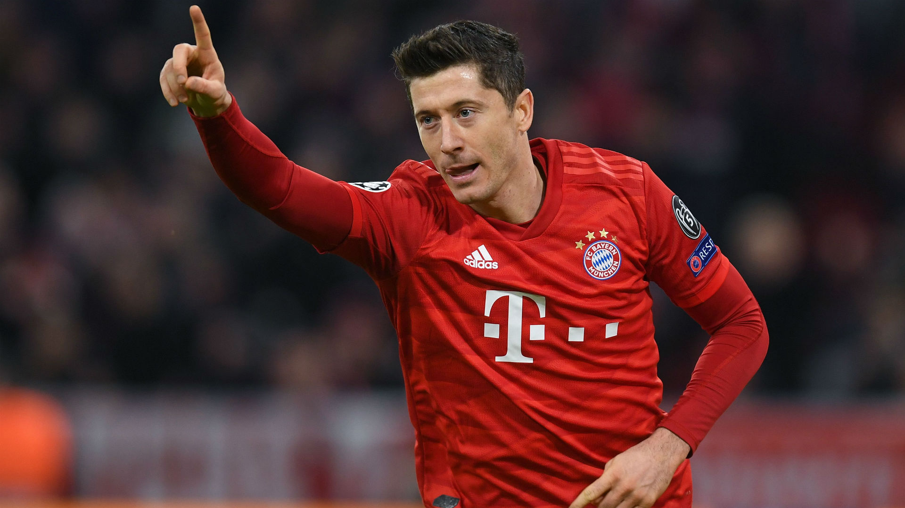
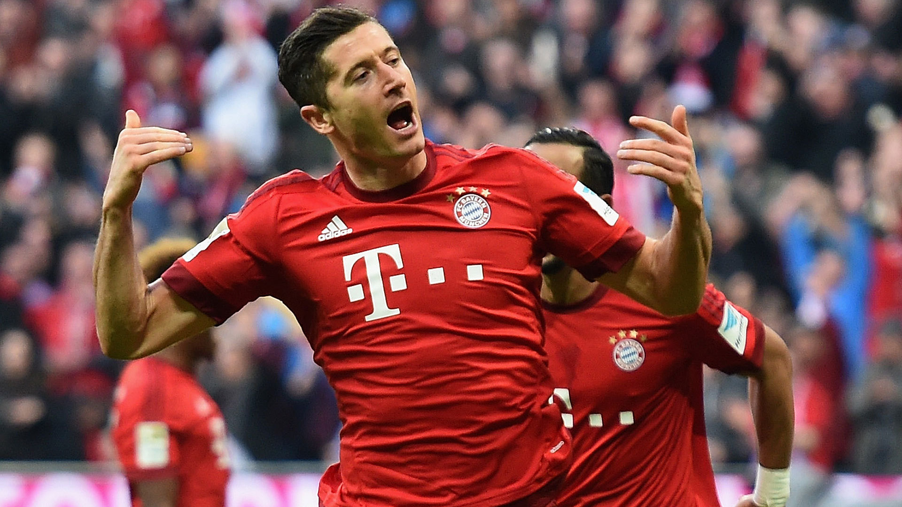
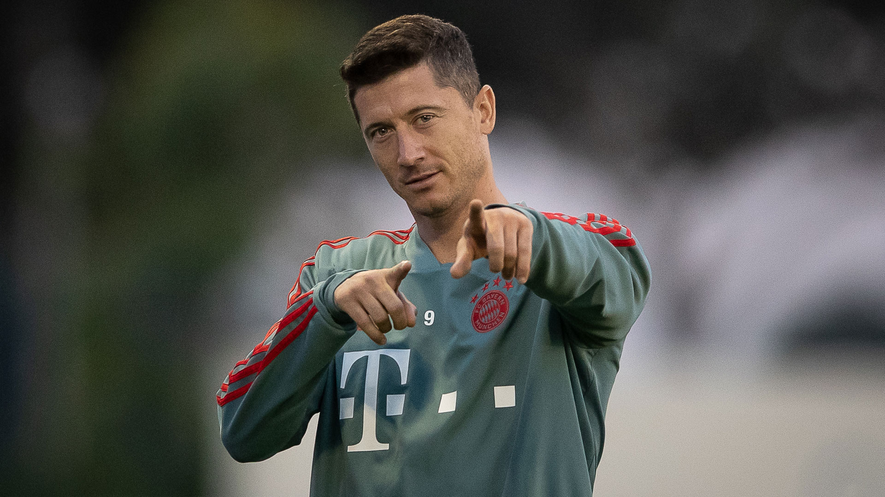

-

31 agustus 2020
keluarga
Lewandowski memiliki ayah yang bernama Krzysztof (w. 1995), pernah menjuarai judo champion, dan juga pemain sepak bola Hutnik Warszawa di divisi kedua. . Ibunya bernama Iwona, pemain Bola Voli resmi AZS Warszawa dan kemudian wakil presiden Partyzant Leszno , memiliki saudara kandung perempuan yang bernama Milena yang juga bermain bola voli dan telah mewakili tim nasional U-21. . Lewandowski menikahi Anna Stachurska pada tanggal 22 Juni 2013 di Warsaw , seorang atlet wanita yang pernah memenangkan medali perunggu pada Kejuaraan Piala Dunia Karate pada tahun 2009, Selain rentetan prestasi gemilangya itu, Lewandowski juga menemukan wanita pujaannya selama ini, yaitu Anna Lewandowska. Anna merupakan seorang atlit karate lulusan akademi olahraga warsawa. Keduanya menikah pada tahun 2013. Namun baru dikaruniai anak pada oktober 2013 yang diberi nama Klara Lewandowski. ...
-

31 agustus 2020
lewandowski say:
When I was a young player, I never dreamed of scoring five goals in a game - and in nine minutes is something else. And when it happened, it was incredible that there could ever be anything like that in the history of the game. It took me a couple of days to realise what I'd done..
-

31 agstus 2020
karier intrnasional
Robert Lewandowski adalah seorang pemain sepak bola profesional yang berasa dari Polandia. Ia lahir pada tanggal 21 Agustus 1988 di Warsaw, Polandia. Saat ini ia merupakan salah satu punggawa dari klub Bayern Munchendan bermain pada penyerang. Selain itu ia juga termasuk pemain dalam skuad timnas Polandia. Lewandowski membuat tiga penampilan bersama tim U-21 Polandia, dalam pertandingan persahabatan melawan Inggris, Belarus dan Finlandia. Karirnya di Timnas juga cukup baik. Robert Lewandowski adalah pesepakbola terbaik yang pernah dimiliki Polandia, dirinya sukses mengukir prestasi dengan berbagai klub yang pernah di belanya. Namun di level timnas dirinya belum mampu menghadirkan trofi, Lewy pernah berseragam timnas polandia u-21 tahun 2008 dan kemudian melakukan debut bersama tim senior pada 10 september 2008 melawan San Marino. Bersama Polandia ia tampil di ajang piala eropa 2012 dan piala eropa 2016, bahkan di prancis 2016 ia mampu membawa Bialo Czerwoni (Julukan Timnas Polandia) melangkah hingga perempat final. Ia juga tampil di piala dunia 2018, saat ini dirinya sedang memegang rekor sebagai pencetak gol terbanyak sepanjang masa timnas polandia dengan 57 gol. Gaya bermainnya yang cekatan, mampu memanfaatkan peluang, serta memiliki insting tajam bukan tak mungkin jika striker asal Polandia ini mampu menyumbangkan trofi-trofi bergengsi lainnya untuk Bayern Atau mungkin untuk timnas Polandia. Bermain di kota Warsawa pada pertandingan pembukaan UEFA Euro 2012 pada penyisihan Grup A melawan Yunani, Lewandowski mencetak gol pertama dalam turnamen itu setelah mendapatkan assist dari Jakub Błaszczykowski dan menjadikannya sebagai Man of the Match di pertandingan itu . Ia bermain di seluruh tiga pertandingan Polandia pada turnamen itu, Polandia selaku tuan rumah tersingkir di babak penyisihan grup dengan hanya mengemas dua poin.